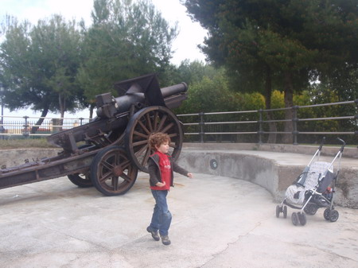
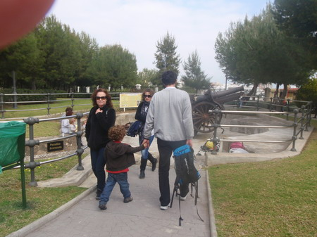
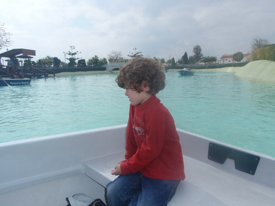

Uno de los cañones que se encuentran en el parque la Batería
El parque de la Batería, situado en Torremolinos, provincia de Málaga, es un hermoso parque donde pasar una mañana o tarde muy agradable. No es demasiado grande, tiene una superficie aproximada de 74.000 m². Está bien equipado con servicios y zonas de recreo tanto para niños de todas las edades como para adultos.
Como aliciente cuenta con un gran valor histórico, al ser un antiguo punto defensivo, en el que aún se conservan algunos cañones de gran tamaño y dos búnkers.
Destaca en su parte central un lago artificial, en el que se puede alquilar por un precio razonable, un bote a remos.
Cómo llegar al parque La Batería: Situado en la avenida del Cañuelo, s/n, de Torremolinos. Coordenadas: 36.613728, -4.508472.

Recorrido por los puntos defensivos de la fortificación

Agradable paseo en bote
VER MAS FOTOS EN GALERÍA DE FOTOS COMPLETA - Enlace
Coordenadas:
- Entrada: 36.613728, -4.508472
Predicción meteorológica de la zona para el municipio donde se encuadra la ruta, según la Agencia Estatal de Meteorología.